airflow已经成为了任务编排系统的事实标准，使用和terraform一样的代码及配置的任务开发方式。
airflow使用python作为开发语言，非常简单易学、容易上手。
完整案例代码已上传github：https://github.com/neatlife/myairflow
获取airflow实例
可以使用docker一键启动
git clone https://github.com/puckel/docker-airflow
cd docker-airflow
docker-compose -f docker-compose-LocalExecutor.yml up -d
访问ip:8080查看效果
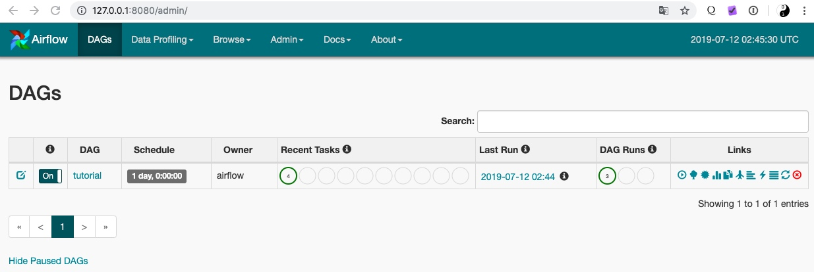
可以看到airflow已经可用了
编辑dag文件
这个dag文件就是用来定义任务和任务之间的先后、依赖关系的。
参数设置
参考：https://airflow.apache.org/tutorial.html#default-arguments
其中几个比较重要的参数如下：
| 参数名 | 作用 |
|---|---|
| start_date | 任务开始时间 |
| end_date | 任务结束时间，不填代表永远 |
| retries | 任务执行失败重试次数 |
| retry_delay | 重试的间隔时间 |
代码实现如下
vim mydag.py
from airflow import DAG
from airflow.operators.bash_operator import BashOperator
from datetime import datetime, timedelta
default_args = {
"start_date": datetime(2019, 7, 10),
"retries": 1,
"retry_delay": timedelta(minutes=5),
}
dag = DAG("mydag", default_args=default_args, schedule_interval=timedelta(1))
上面的"schedule_interval=timedelta(1)"代表一天触发一次这个任务，也可以使用crontab的语法，参考：https://airflow.apache.org/scheduler.html#dag-runs
这个新的dag文件需要使用python执行这个脚本导入，可以使用下面的命令进行导入
docker-compose -f docker-compose-LocalExecutor.yml exec webserver bash
python dags/mydag.py
刷新这个web界面，就可以看到这个新加的mydag任务了
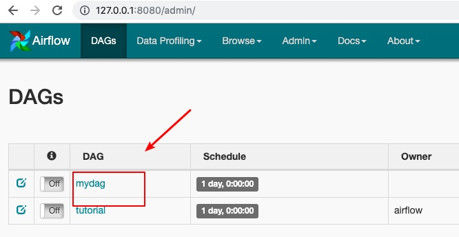
这个airflow的任务加载比较慢，如果显示状态和上面不同需要多等待一会儿
定义案例任务
这里定义三个任务，分别echo出1, 2, 3，关系如下
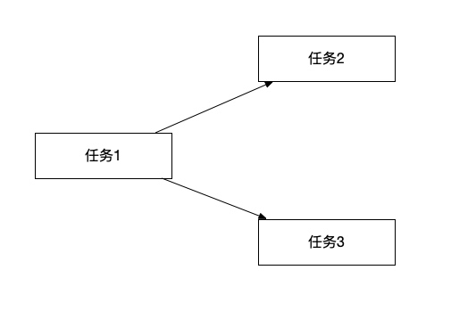
代码实现如下
定义任务执行内容
t1 = BashOperator(task_id="echo1", bash_command="echo 1", dag=dag)
t2 = BashOperator(task_id="echo2", bash_command="echo 2", dag=dag)
t3 = BashOperator(task_id="echo3", bash_command="echo 3", dag=dag)
上面使任务使用airflow执行的bash，airflow还可以执行很多输入，完整列表参考：https://airflow.apache.org/_api/airflow/operators/index.html#submodules
定义任务间关系
t2.set_upstream(t1)
t3.set_upstream(t1)
加载修改过的airflow任务编排文件
首次修改这个dag文件，airflow回自动加载，点击"Refresh"按钮可以手动加载这个配置文件
操作效果如下
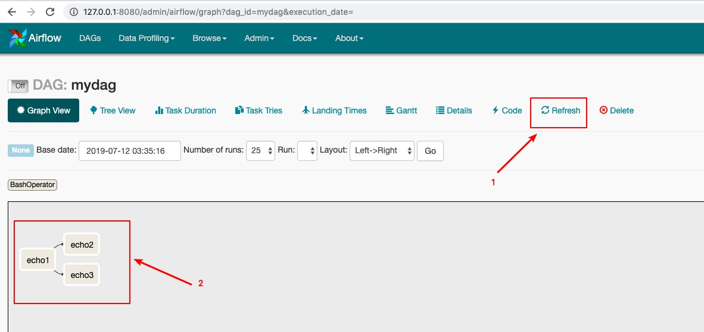
可以看到这个echo1, echo2, echo3的依赖关系定义成功了
启动任务
先启用这个任务，然后点击执行按钮，操作效果如下
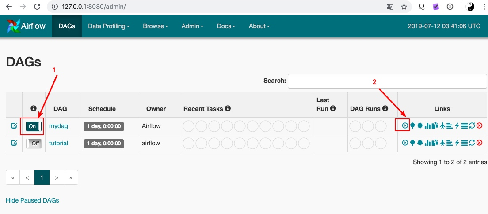
也可以只启用这个任务，然后等这个airflow按照设定的时间，自动触发，手动触发可以快速验证
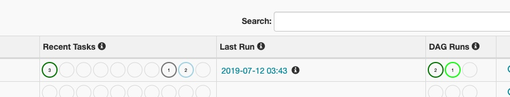
可以看到任务已经开始执行了
查看任务执行状态
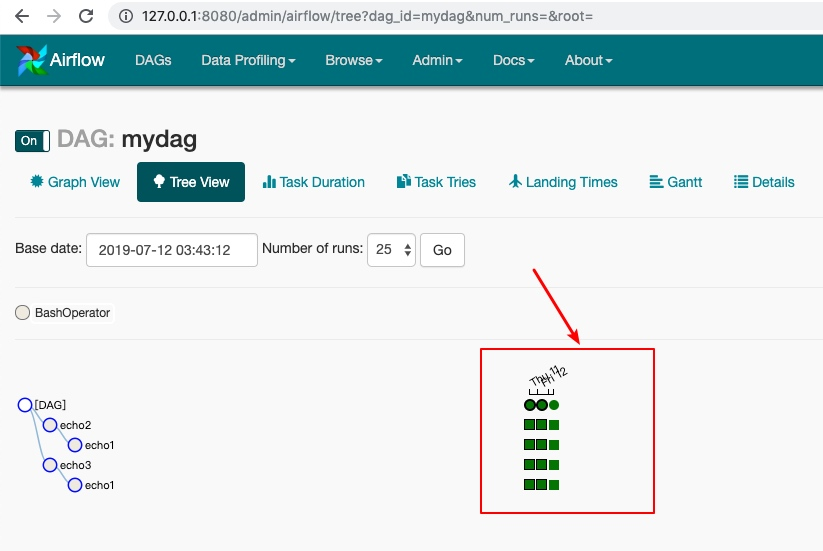
这个任务的执行状态用不同的颜色进行表示
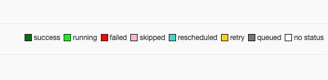
可以看到所有的任务都已经成功执行完成了
查看任务执行输出
单击 "Browser" > "Task Instance"可以查看所有被执行的任务列表
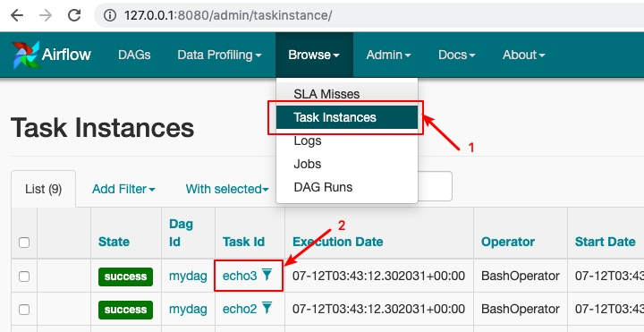
单击具体的task id就可以进入到task执行情况详情页面了，单击详情页的"Log"就可以看到任务的日志输出了，操作效果如下：
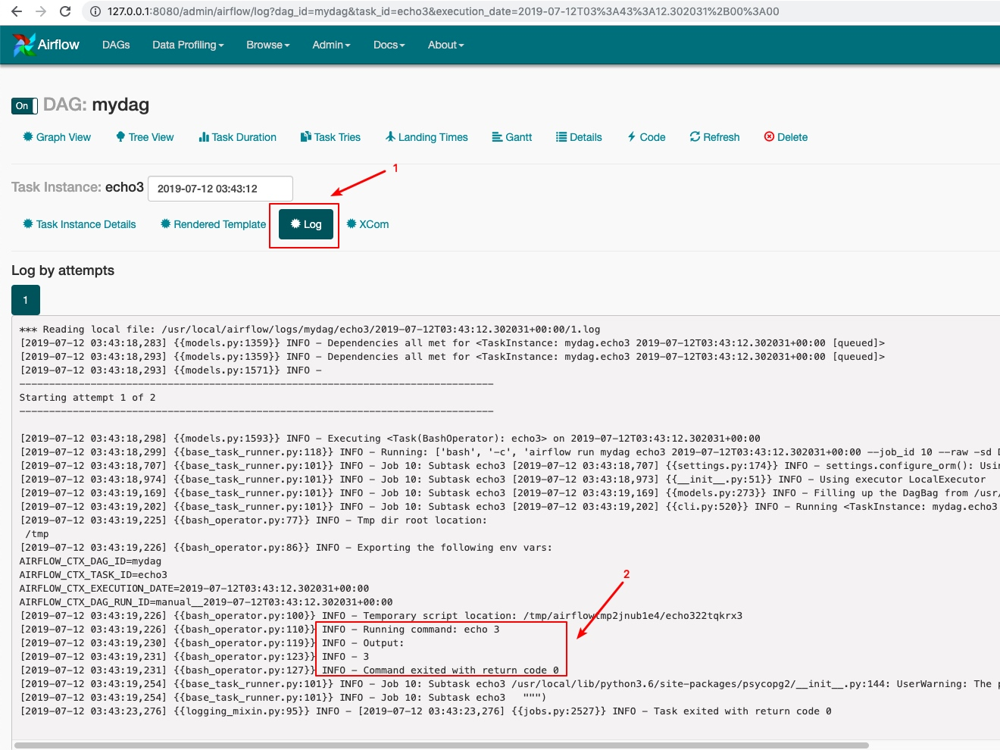
查看jinjia模板渲染结果
如果使用了这个airflow的模板功能，可以在任务执行详情页面，查看这个被执行任务的模板渲染结果，操作效果如下：
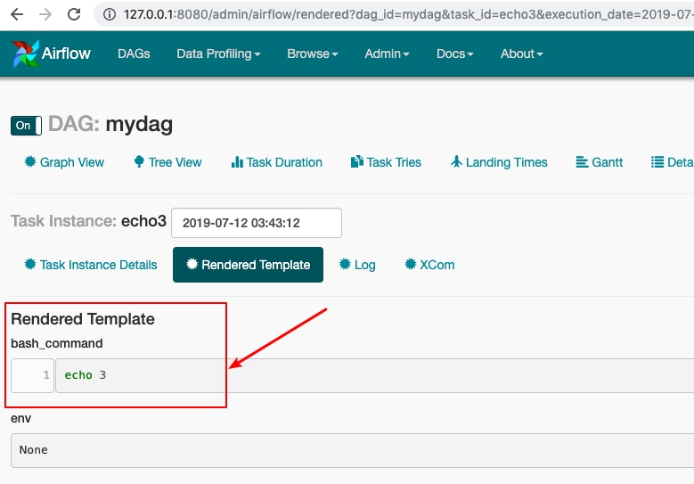
删除任务
需要先删除dag定义文件，比如 rm dags/mydag.py，然后在web界面上删除
一些注意的点
这个airflow依赖非常的多，因为没到1.0版本，存在一些bug，所以建议使用docker启动，主要的dag任务编排功能使用是ok的，其它功能可以先了解下
airflow可以使用模板功能生成脚本，参考：https://airflow.apache.org/tutorial.html#templating-with-jinja
jinjia模板语法参考：http://jinja.pocoo.org/docs/dev/
airflow默认以utc时区运行，如果需要计算正确的时间，需要把时间进行时区转换，核心代码如下
#将本地时间转换为utc时间，再设置为start_date
tz = pytz.timezone('Asia/Shanghai')
dt = datetime(2018, 7, 26, 12, 20, tzinfo=tz)
utc_dt = dt.astimezone(pytz.utc).replace(tzinfo=None)
airflow适合复杂的工作流，并且可以并行、分布式运行。
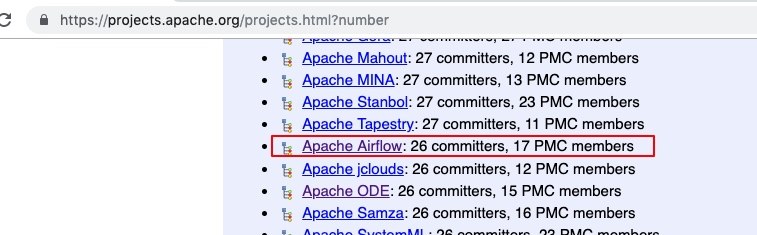
https://projects.apache.org/project.html?airflow
这个airflow会重试失败的任务，有可能任务执行一般异常退出了，重试后要做幂等